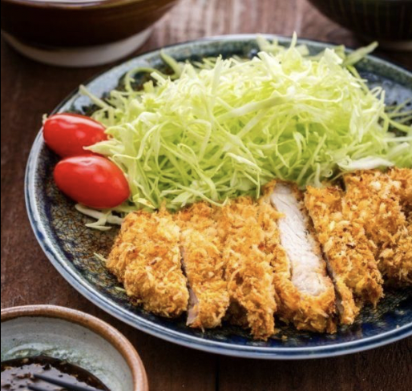

Tonkatsu

General history and description.
Tonkatsu is a fried cutlet dish originating in Japan. However it was inspired by western cuisine which is known as Yoshoku. Unlike the other popular fried cutlet dishes it uses different ingredients.
It is made from panko which is a Japanese styled breadcrumb made from soft white bread without the crust.
Comparatively to the typical finely grounded, stale breadcrumbs. Additionally, Panko flakes are larger than standard breadcrumbs
so they absorb less oil when fried - resulting in a crispy yet airy coating. It is enjoyed with tangy Tonkatsu sauce and cabbage on the side.
Ingredients
- 2 boneless pork loin chops (1/2 inch thick)
- 1/2 tsp kosher salt
- 1/8 tsp freshly ground black pepper
- 3 cups of neutral flavoured oil (vegetable, canola etc)
For Tonkatsu Breading
- 2 Tbsp all purpose flour
- 1 large egg (50g w/o shell)
- 1/2 Tbsp neutral-flavoured oil (vegetable, canola etc)
- 1/2 cup panko (Japanese breadcrumbs)
For Serving
- 5 Tbsp of store brought sesame Tonkatsu Sauce
- 1/4 head green cababge
Steps
Prepare the Pork
- Prepare shredded cabbage, either cutting thinly with a sharp knife or using a cabbage slicer. toss cabbage and cucumber together and set aside. This step is optional and will act as your garnish for later.
- Use a sharp knife and move extra fat and make a few slits on the connective tissue (white area) between the meat and fat. This allows the tonkatsu to stay nice and flat when deep-frying and curling up.
- Flip meat and make several slits on other side of connective tissue.
- Pound both sides of meat with back of knife or meat tenderizer.
- Mold meat back into original shape with your hands.
- Season both sides of meat with salt + pepper.
Bread the Pork
- Crack the egg in a deep dish and add oil. Whisk until well combined. Add oil, the meat and breading won't detach from each other while deep drying and juice and flavour from the meat won't escape. Then prepare a deep dish for the flour as well.
- Dredge the pork in flour and dust off excess. Then dip into egg mixture and coat well. Finally dredge the pork in panko, pressing gently down the panko onto the pork. Set it aside for 5-10 minutes so breading will set.
Deep Fry
- Add oil to pot and bring to 170 celsius over medium heat.You can check if oil is ready by seeing if bubbles appear near tip of chopsticks or that a piece of panko will sink down to the middle of the oil and pop back up to surface. This means the oil is ready.
- Put a piece of pork into the oil and cook for 1 minute without flipping. Do not touch the pork for 30 seconds.
- After a minute, flip and cook on the other side for 1 minute.
- Take the pork and remove excess oil by holding it vertically over the pot to let oil drip off. Then place it on wire rack or paper towel to let it sit for 4 minute.
- Scoop up and discard fried crumbs in oil with fine mesh strainer. Turn on heat and bring oil back to 170 celsius.
- Repeat steps for each cutlet.
Serve with the pre-made garnish and Tonkatsu sauce. Enjoy.